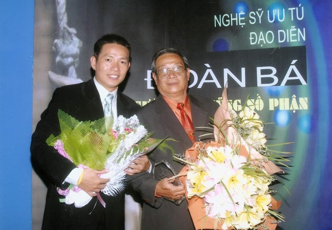

TP HCMĐoàn Bình - đạo diễn chương trình truyền hình "Vợ chồng son", "Bạn muốn hẹn hò" - qua đời vì tai nạn, hưởng dương 46 tuổi. Mai Anh - vợ Đoàn Bình - xác nhận đạo diễn qua đời ngày 6/1 sau khi gặp tai nạn ôtô ở TP Thủ Đức, mất tại chỗ. Gia đình không muốn mẹ của đạo diễn sốc vì đang gặp vấn đề về sức khỏe nên quyết định báo tin muộn. Ngày 7/1, thi thể của Đoàn Bình đã được hỏa táng, chờ người thân ở Mỹ về tổ chức tang lễ.
Ảnh: Đoàn Bình (trái) bên ba - cố NSƯT Đoàn Bá - lúc cả hai còn sống tại một sự kiện.Đoàn Bình ra đi để lại vợ và bốn con. Mai Anh cho biết hôm 5/1, đạo diễn mới đón sinh nhật tuổi 46. Nhiều bạn bè gửi lời chúc mừng, Đoàn Bình cũng tiết lộ nhiều kế hoạch trong năm 2022. Mai Anh nói chồng có mong ước nhìn bốn con lớn khôn, giờ vợ sẽ thay thế đạo diễn chăm sóc các con nên người. Nhiều tháng trước do Covid-19, Đoàn Bình có nhiều thời gian bên vợ con hơn. Đạo diễn đọc nhiều sách, nghiên cứu các lĩnh vực bởi cho rằng muốn làm nghề tốt cần biết nhiều, hiểu rộng. Trên Facebook ngày 6/1, Mai Anh viết: "Là anh, người cho em cả một bầu trời, cả một đời vinh hoa".Nhiều nghệ sĩ như Minh Nhí, Quyền Linh, Ốc Thanh Vân... và các bạn bè, đồng nghiệp khác bất ngờ trước thông tin, gửi lời chia buồn tới gia đình Đoàn Bình. Diễn viên Quốc Thuận viết: "Vĩnh biệt người anh vui tính, dễ thương của em. Anh ra đi thanh thản". Sáng 9/1, nghệ sĩ Hồng Vân hay tin người em thân thiết qua đời lúc đang ở phim trường. Hồng Vân kể nhiều năm trước, cố nghệ sĩ Đoàn Bá gửi gắm Đoàn Bình về sân khấu kịch, nhờ diễn viên giúp đỡ. Hồng Vân ấn tượng Đoàn Bình là người ham học hỏi, biết lắng nghe và phấn đấu không ngừng trong công việc. Đoàn Bình từng làm diễn viên trước khi rẽ hướng sang đạo diễn. Anh từng được chú ý qua vai Xuân tóc đỏ trong vở kịch Số đỏ tại Sân khấu kịch Phú Nhuận. Từ ngày Đoàn Bình lập gia đình, làm đạo diễn các chương trình truyền hình, cả hai ít gặp nhau hơn. Đạo diễn Đoàn Bình (tên đầy đủ: Đoàn Thanh Bình) sinh năm 1976, là con trai út của cố NSƯT Đoàn Bá, có các chị gái gồm: nghệ sĩ Đoàn Mai Phương, Đoàn Mai Lan và Đoàn Mai Trang. Anh từng tốt nghiệp ngành kỹ sư tin học nhưng quyết định nối nghiệp cha theo đuổi nghệ thuật. Anh thi vào Cao đẳng Sân khấu Điện ảnh TP HCM, tốt nghiệp loại giỏi ngành Đạo diễn sân khấu. Đoàn Bình thực hiện các chương trình Vợ chồng son, Bạn muốn hẹn hò, Ước mơ của em... Đạo diễn cũng từng đảm nhận vai trò giám đốc sản xuất phim Ngược sóng (38 tập do đạo diễn Lê Cung Bắc dàn dựng). Tên tuổi của Đoàn Bình còn ghi dấu ấn qua các chương trình nghệ thuật như Bước nhảy hoàn vũ, Cặp đôi hoàn hảo, Một phút để chiến thắng, Giọng hát Việt...